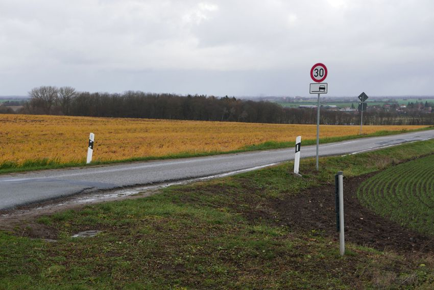
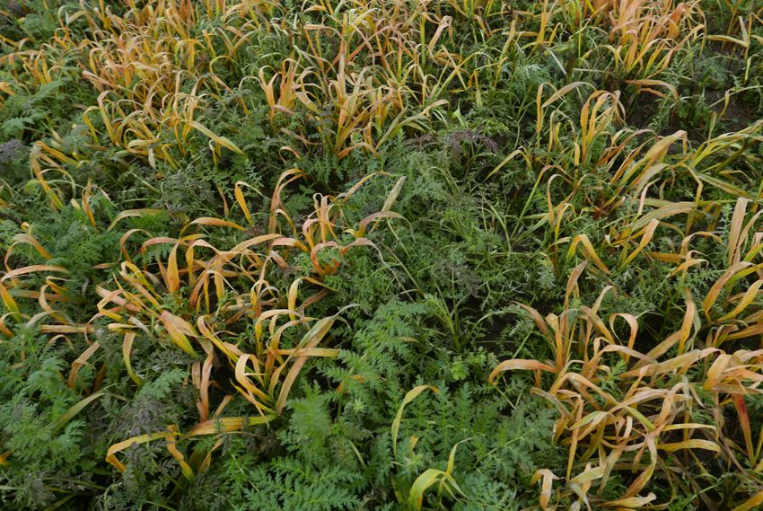

Honigpflanzen


Sag mir, wo die Bienen sind... , Honigpflanzen sind Bestandteil einer EU-Verordnung zur Entwicklung des ländlichen Raumes (ELER). Wer in dieser Verordnung nach „Bienen“ sucht, wird nichts finden. „Honigpflanzen“ haben den Greening-Faktor 1,5 wenn sie auf Brachland angebaut werden.
Aber wo ist hier noch Brachland.
Zwischen Hohenbüssow und Buchholz wurde Klärschlamm ausgebracht. Nach der Ernte der Hauptfrucht (hier Rüben, dort Mais) kamen Tomaten ans Licht. Großraumtechnik beendete das Nachtschattenwachstum und angebaut wurde Phacelia, auch "Bienenfreund" genannt. Ein milder Herbst ließ die Gründüngung erblühen.
Nur wenige hundert Meter weiter, auf dem Friedhof von Hohenbüssow standen 6 von 60 Bienenbeuten. Finanziert aus den EU-Fördermitteln des LEADER FONDS und dem VORPOMMERN FOND, an verschiedenen Standorten bei Gastgebern der umliegenden Dörfer.
„Von den 6 Völkern in Hohenbüssow ist nur noch eins am Leben. Die Völker sind recht leer, was auf eine Vergiftung hinweisen kann, die Biene stirbt ja draußen… seit 2 Monaten (23.9.) stehen sie nun dort. An 5 anderen Standorte sind „nur“ einzelne Verluste zu beklagen. Und an einem Standort sind die Völker alle wohlauf... das ist mal wieder merkwürdig.“ berichtet die Imkerei Gisela Paasch in der aktuellen Tollensetaler Stimme.
Die 6 Bienenbeuten sind nicht mehr auf dem Friedhof sondern bei der Imkerin. Dort war inzwischen das Landespflanzenschutzamt und hat Bienenproben entnommen. Ob hier mal wieder Glyphosat im Spiel war, wird sich zeigen. Das wichtigste Gift der Welt hat nicht den besten Ruf. Es vernichtet so gut wie alle unerwünschten Gräser, Kräuter und … vielleicht sogar Bienen. Dabei sollen Bienen doch neben Rind und Schwein zu den drei bedeutendsten Nutztieren zählen.
Der Imkerin wurde schon geraten, sich einen anderen Standort oder einen anderen Beruf zu suchen. Früher war es üblich, dass Pastoren Zeit für Bienen hatten. Heute müssen sie im Auto von Kirche zu Kirche summen, kreuz und quer durch leuchtend honiggelbe Felder.